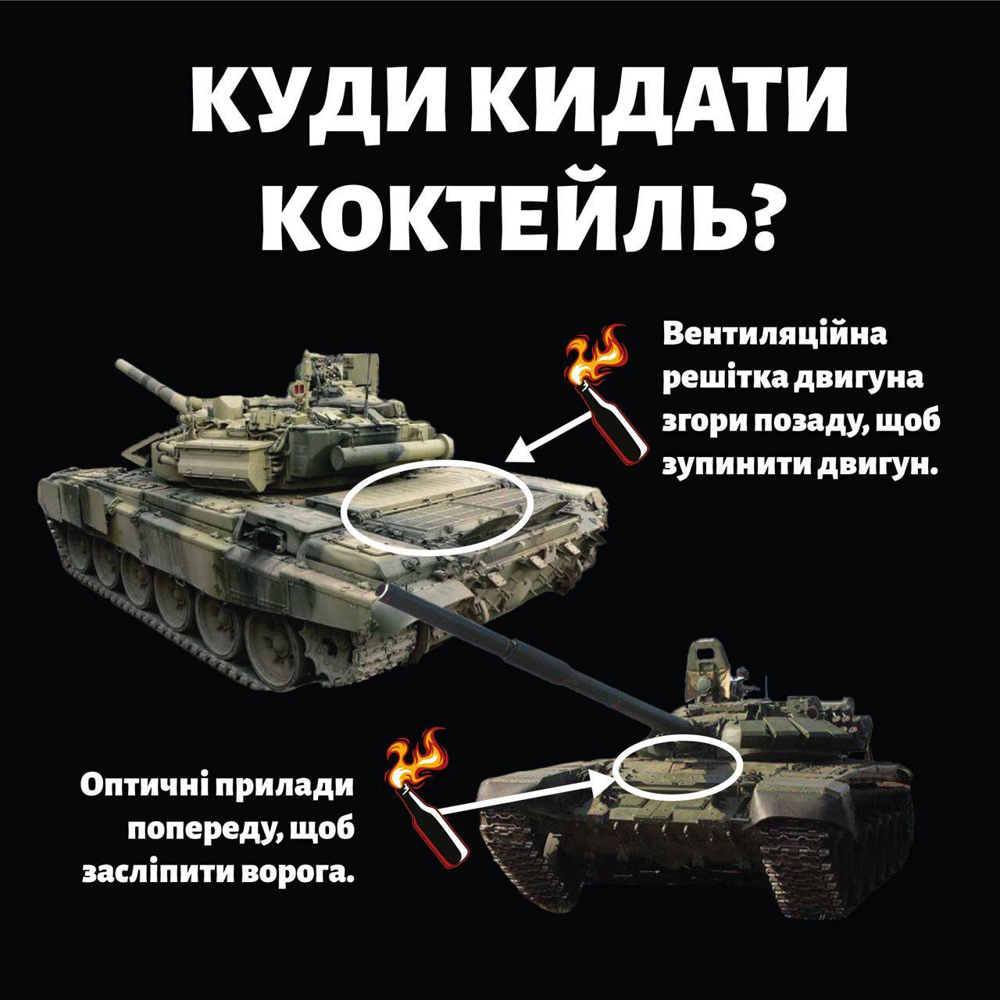
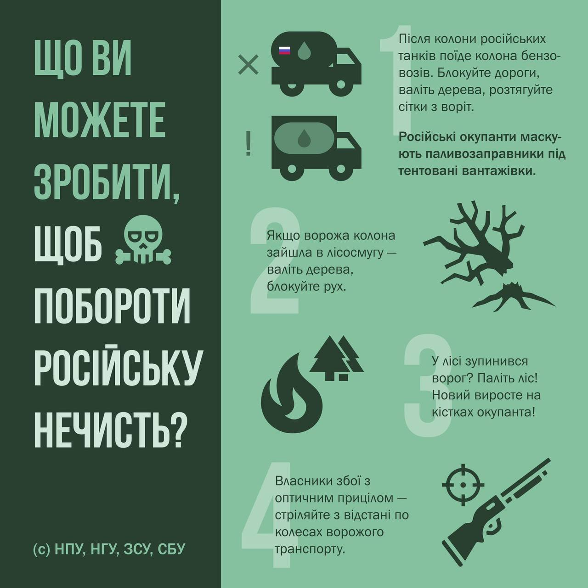

<div id="carouselExampleControls" class="carousel slide corus1" data-bs-ride="carousel"  >

    <div class="carousel-inner" >
      <div class="carousel-item active "  >
        
       
      </div>
      <div class="carousel-item">
        
      </div>
      <div class="carousel-item">
         
      </div>
    </div>

    <button class=" batonl" type="button" data-bs-target="#carouselExampleControls" data-bs-slide="prev">
      <span class="carousel-control-prev-icon" aria-hidden="true"></span>
      <span class="visually-hidden">Previous</span>
    </button>

    <button class="batonr" type="button" data-bs-target="#carouselExampleControls" data-bs-slide="next">
      <span class="carousel-control-next-icon" aria-hidden="true"></span>
      <span class="visually-hidden">Next</span>
    </button>

  </div>

</div>


<!-- <b><p>Дивитись також:</p></b>
  <p><a href="https://www.ukrmilitary.com/2021/12/survival.html">Що робити якщо війна? Як вижити в місті? Кілька порад цивільній людині</a></p>
  <p><a href="https://www.ukrmilitary.com/2021/11/hlopzu-z-lisu.html">Що взяти на війну? Військова тривожна валіза (ВІДЕО)</a></p>
  <p><a href="https://www.ukrmilitary.com/2021/12/med-2-eshelon.html">Що взяти на війну з медикаментів? Аптечка другого ешелону</a></p>
  <p><a href="https://www.ukrmilitary.com/2021/12/combat-equipment-.htmll">Бойове спорядження. Що взяти на війну для виконання бойових завдань?</a></p> 


<a href="https://www.ukrmilitary.com/2019/08/kalashykov.html">Кожен має право на «Калаш» – огляд карабінів на базі АК </a>

 -->